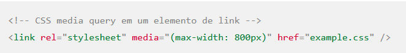
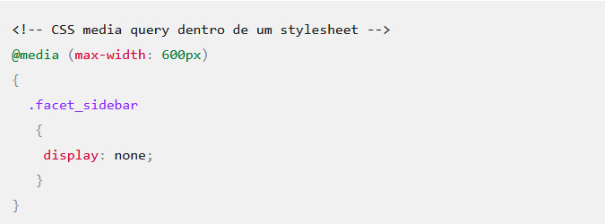
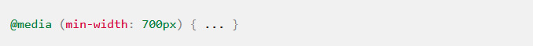
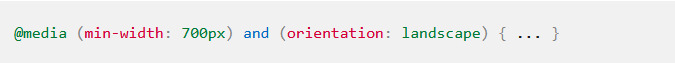
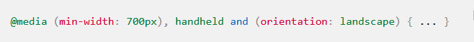
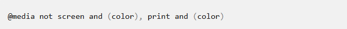
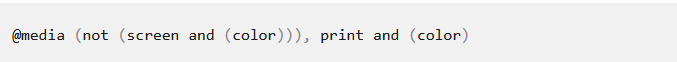
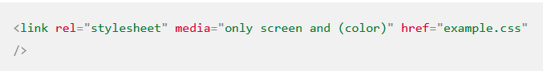
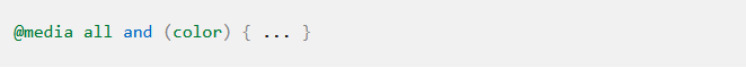
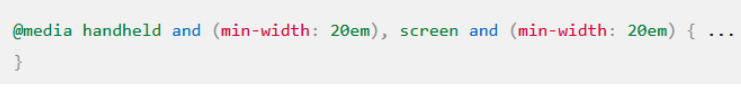

O que é?
Uma media query consiste de um media type e pelo menos uma expressão que limita o corpo das folhas usando media features, tal como largura, altura e cor. Media queries, adicionadas no CSS, deixam a apresentação do conteúdo adaptado a uma gama específica de dispositivos, não precisando mudar o conteúdo em si.
Sintaxe
Media queries consistem de um media type e podem, a partir de uma especificação CSS, contendo uma ou mais expressões, expressa em media features, que determinam ou verdadeiro ou falso. Os resultados da query são verdadeiros se o media type especificado na media query corresponde ao tipo do documento exibido no dispositivo e todas as expressões na media query são verdadeiras.
 Quando uma media query é verdadeira, a camada de estilo correspondentes são aplicadas, seguindo o padrão de regras de cascatas. Camadas de estilos com media queries ligadas a tag vão fazer download mesmo se suas medias queries retornarem falso (eles não se aplicam, no entanto). A menos que você use os operadores not ou only, o media type é opcional e o tipo all será implícito.
Operadores lógicos
Você pode compor media queries complexas usando operadores lógicos, incluindo not, and, e only. O operador and é usado para combinar múltiplas media features em uma mesma media query, requerendo que cada sequência de características, retorne verdadeiro na ordem para que a query seja verdadeiro. O operador not é usado para negar uma media query inteira. O operador only é usado para aplicar um estilo apenas se a query inteira for igual, útil para previnir que navegadores antigos apliquem os estilos selecionados. Se você usar os operadores not ou only, você tem que especificar um tipo de media explícito. Você também pode combinar múltiplas medias queries em uma lista separadas por vírgulas, se qualquer uma das media queries na lista é verdadeira, toda a instrução retorna verdadeira. Isto é equivalente a um operador or.
and
A palavra-chave and é usada para combinar múltiplas media features, bem como combinar media features com media types. Uma media query básica pode parecer com isso:
Se, no entanto, você desejar que isso se aplique apenas para telas em landscape, você pode usar o operador and para deixar todas as media features juntas.
Agora, a media query acima vai ser aplicada apenas se a media type for TV, o viewport for 700px wide ou wider, e a tela estiver em paisagem.
Listas separadas por vírgula
Listas separadas por vírgulas comportam-se como o operador or quando utilizadas em media queries. Quando utilizamos media queries com uma lista separada por vírgulas, se qualquer media queries retornar verdadeiro, os estilos ou folhas de estilos serão aplicadas. Cada media query em um lista separa por vírgulas é tratada como uma query individual, e qualquer operador aplica em uma media query não afeta os outros. Isto significa que media queries separadas por vírgulas podem ter objetivos diferentes de media features, types e states. Por exemplo, se você quiser aplicar um conjunto de estilos se o dispositivo de visualização tiver um largura mínima de 700px ou estiver sendo segurando em paisagem, você pode escrever o seguinte:
not
A palavra chave not se aplica em toda a media query e retorna verdadeiro, caso contrário retorna falso (tal como monochrome como cor de tela ou uma tela de largura de 600px com um min-width: 700px recurso consultado). Um not vai apenas negar a media query que é aplicada, de modo não toda a media query que apresente uma media querie com uma lista separada por vírgulas. A palavra chave not não pode ser usada para negar uma característica individual da query, apenas uma media query inteira. Por exemplo:
É avaliada desta forma:
only
A palavra chave only previne que navegadores antigos que não suportam media queries com media features de aplicar os estilos dados:
Características de mídia
A maioria das media features podem ter prefixo “min-” ou “max-“ para expressar as restrições “maior ou igual” ou “menor ou igual”. Isto evita o uso dos símbolos “<” e “>” , que entrem em conflito com HTML e XML. Se você usar uma media feature sem especificar um valor, a expressão retorna verdadeiro, se o valor da feature for diferente de zero. Exemplo utilizando cor, aplicando uma folha de estilo a todos dispositivos:
Exemplo onde se utiliza width:
